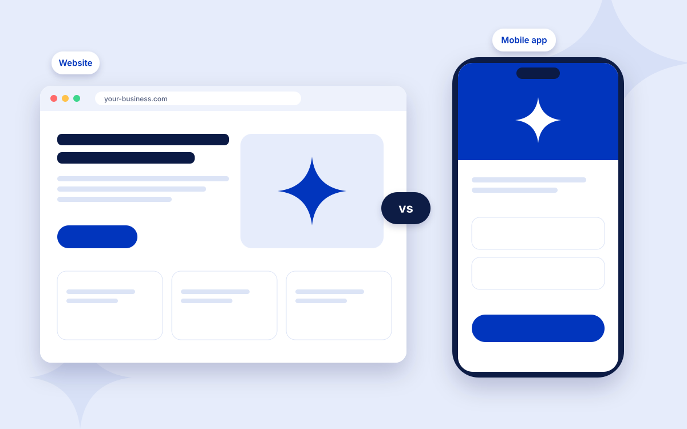
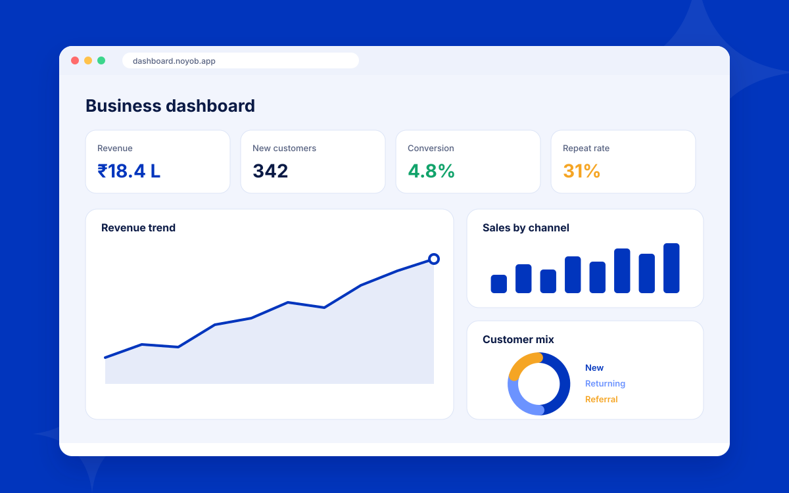
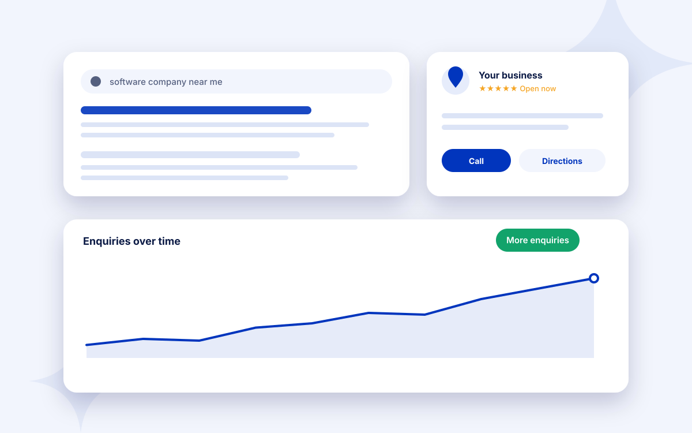
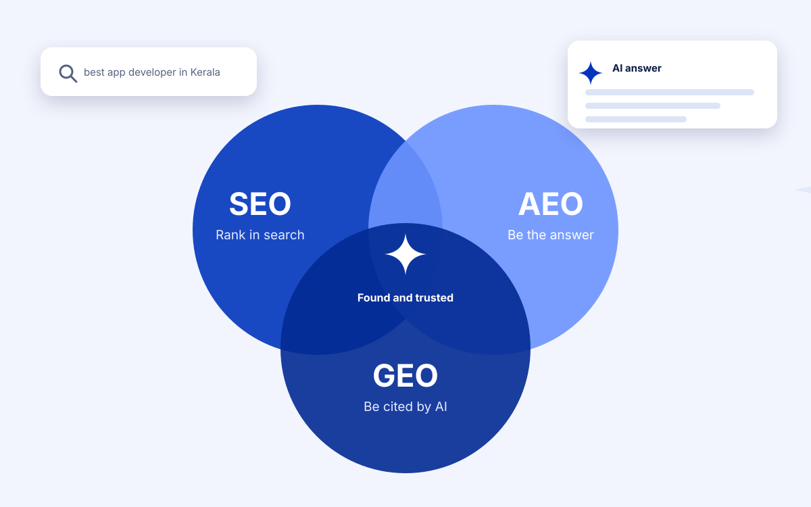

Web and apps
Website or Mobile App: Which Should Your Business Build First?
Most businesses should start with a website. Here is how to tell when an app makes sense, and when it does not.

You do not need a large data team to make better decisions. Five simple numbers can tell you whether your business is growing in a healthy way.
Count how many enquiries you receive each month and where they come from: Google search, social media, referrals, ads or walk-ins. This shows which channels deserve more effort.
Of all the enquiries you receive, how many become paying customers? If you receive 50 enquiries and win 10 customers, your conversion rate is 20 percent. A low rate may point to pricing, response time or the quality of leads.
Divide your total marketing and sales spend by the number of new customers in the same period. If you spent 50,000 rupees and won 10 customers, each customer cost 5,000 rupees to acquire. Compare this with what a customer is worth to you.
How many customers come back? Repeat customers usually cost less to serve than new ones, so even a small improvement here can have a large effect on profit.
Know which offerings bring the most revenue and the best margin. You may find that a small part of your range creates most of your profit.
Imagine a physiotherapy clinic that receives 80 enquiries in a month: 40 from Google, 25 from Instagram and 15 from referrals. It books 32 first visits, which is a conversion rate of 40 percent. It spent 30,000 rupees on marketing that month, so each new patient cost about 940 rupees to acquire. Within three months, 12 of those patients came back for further sessions, a repeat rate of 37.5 percent. These numbers show where enquiries come from, how well the team turns them into patients and what each patient costs.
Start with a shared spreadsheet. Add Google Analytics 4 to track website enquiries, and Looker Studio to turn spreadsheets and ad accounts into a live dashboard. As volume grows, consider Power BI or a custom dashboard that pulls from your CRM, billing system and ad accounts automatically.
Review leads and conversion weekly, acquisition cost and repeat rate monthly, and revenue by product or service quarterly. A short, regular review is more useful than a long, occasional one.
Numbers only help when they change what you do. After each review, pick one metric to improve and one action to try, such as replying to enquiries faster, improving a service page or moving budget to the channel that brings the best customers. Write the action down, set a date and check the result at the next review. Small, regular improvements add up faster than occasional big projects.
It varies by industry, price and how qualified the enquiries are. Instead of comparing with others, track your own rate over time and look for steady improvement.
Use dedicated tracking phone numbers or WhatsApp links for each channel, and ask every new customer how they found you. Record the answer in the same sheet as your online enquiries.
No. A well-organised spreadsheet and free tools such as Google Analytics 4 and Looker Studio are enough to start.
When you spend more than an hour each week collecting numbers, or when several people need the same figures, an automated dashboard saves time and prevents mistakes.
Track these in a simple spreadsheet at first. As your business grows, a dashboard that updates automatically saves time and keeps everyone looking at the same figures. Our data analytics service can help you set this up.

Web and apps
Most businesses should start with a website. Here is how to tell when an app makes sense, and when it does not.

Digital marketing
Eight practical steps to help customers in Kerala find your business on Google.

Digital marketing
What SEO, AEO and GEO mean, how they differ, and what to do so customers can still find you in Google and in AI answers.
Tell us what you want to build or improve. We will reply with next steps and a free consultation.